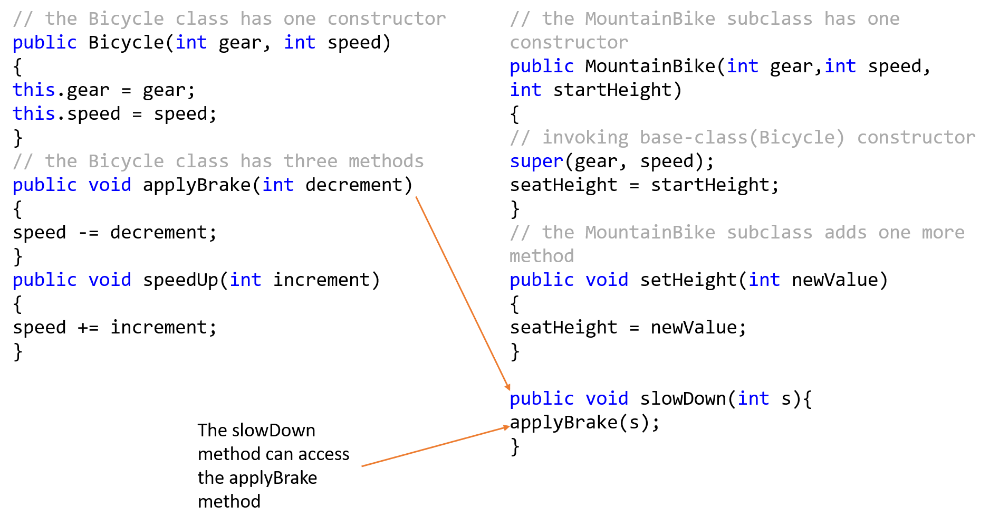
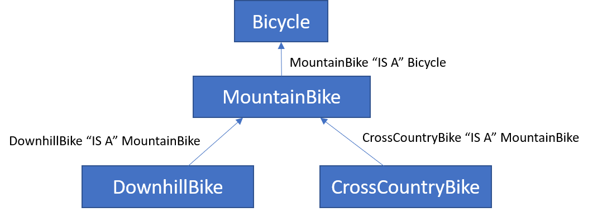
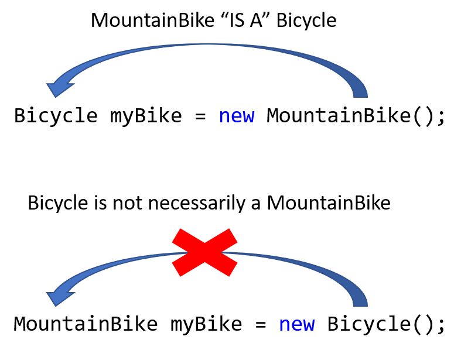
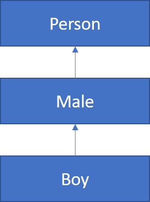

Suppose that for some reason, we had a programming task that was to model animals. For example, we want to have a class for a cat, a class for a dog, a class for a horse, and so forth. As you can imagine, there could be lots of redundancy among those classes because animals have some common characteristics. For instance, all animals have, say, two eyes, or two ears, and make sounds, and so forth. Or at least all the animals that we would like to model do.
We could create a super class called animal to capture all these common characteristics and behaviors. And then we could have all the specific animal classes derive from the animal class. So far so good…
The question though is, what would new animal mean? In other words, if we create an object of the animal class, what kind of object would that be? What would we try to model by creating an object of the animal class?
You may be thinking there is no point in creating objects from the animal class, so there is no need to ever invoke the animal constructor. But subclasses could benefit from extending such a class.
Java prohibits, under some circumstances, creating objects from specific classes. Such classes are referred to as abstract classes. Abstract classes are classes that cannot be instantiated – objects cannot be created from abstract classes. While the methods abstract classes carry may be implemented, methods declared as abstract cannot be implemented by the abstract class, they must instead be implemented by the subclass. Such methods can provide a framework for a subclass.
Objects cannot be created from abstract classes
Methods declared as abstract cannot be implemented by the abstract class, they must instead be implemented by the subclass
Abstract classes are implemented using the keyword abstract
In the below example, we have created an abstract class called animal
public abstract class Animal
{
//methods and fields
}
As previously mentioned, abstract classes can provide the frameword for a subclass. For example, consider the following subclasses which inherit the animal class,
public class Cow extends Animal
{
//methods and fields
}
public class Dog extends Animal
{
//methods and fields
}
public class Cat extends Animal
{
//methods and fields
}
Each of the classes that inherit the parent class, Animal, have some common characteristics. For example, a Cow, a Dog, and a Cat, all have two eyes, two ears, and make sounds, and so forth. But these charasterics are different for each animal we want to model.
Suppose we want to ensure that every animal we model can speak. To do this, we would write an abstract method in our abstract class.
public abstract class Animal
{
public abstract void speak();
}
Notice we have only declared the abstract method, but we did not implement it. In fact, Java does not allow for this. However, the classes that inherit the Animal class must implement the speak method.
This is illustrated below,
The above illustrates how abstract classes can serve as a framework for subclasses. In addition to abstract methods, abstract classes can also include regular methods. For example, all the animals in our subclasses have four legs, therefore we can create a method to return the number of legs in the parent class.
public abstract class Animal
{
public abstract void speak();
public String getLegs(){
return "Four";
}
}
An interface is an abstract super class that contains only abstract methods. Consider the following example.
The super class:
public abstract class Parent
{
public abstract void method1();
public abstract void method2();
public abstract int method3(double d);
}
And now the subclass:
public class Child extends Parent
{
public void method1(){ … some code … }
public void method2(){ … some code … }
public int method3()(double c) { … some code … }
}
Notice that in the above example, the super class does nothing. In other words, all methods in the super class are abstract. Moreover, there are no variables which need to be accessed. The only purpose of the super class is to force the subclass to implement its methods. If this is all a particular super class does, then the “abstract” declaration can be replaced with an interface as shown below,
public interface Parent
{
void method1();
void method2();
int method3(double d);
}
Because the MountainBike class extends the Bicycle class, MountainBike is able to access all the public methods and variables associated with Bicycle. This concept is illustrated below,
The inheritance of one class from another follows an "IS A" relationship. That is, a mountain bike "IS A" bicycle. The reverse is not true however. For example, a bike is not necessarily a mountain bike. When creating objects from super and sub classes, this relatioinship becomes important.
Consider the following hierarchy of inherited classes between bicycles
The above heirarchy shows the relationship among the classes in a program. According to the heirarchy
When creating objects from super and sub classes this relationsihp is enforced. This is illustrated below,
Another way to think of this is that "parents can make children, but children cannot make parents"
Any time when a parameter is expecting to receive an object of a particular type, it is acceptable to send it an object of the same class or a subclass, but never of a superclass. This is because the passed class object inherits all the methods of the object. If you attempt to pass an object of a parent class, the expected object may not have all the expected methods. Consider the following hierarchy of classes where each class is a subclass of the class immediately above it.
Suppose there is a method with the following signature:
public void theMethod(Male ml)
The method theMethod is clearly expecting a Male object; therefore, the following calls to this method would be legal since we are either sending a Male object or an object of a subclass:
Male m = new Male();
theMethod(m); //ok to send m since it’s expecting a Male object
Boy b = new Boy();
theMethod(b); //ok to send b since b is created from a subclass of Male
Since theMethod is expecting a Male object, we can’t send an object of a superclass.
Person p = new Person();
theMethod(p); //Illegal
theMethod((Male)p); //Legal if we cast p as a Male object